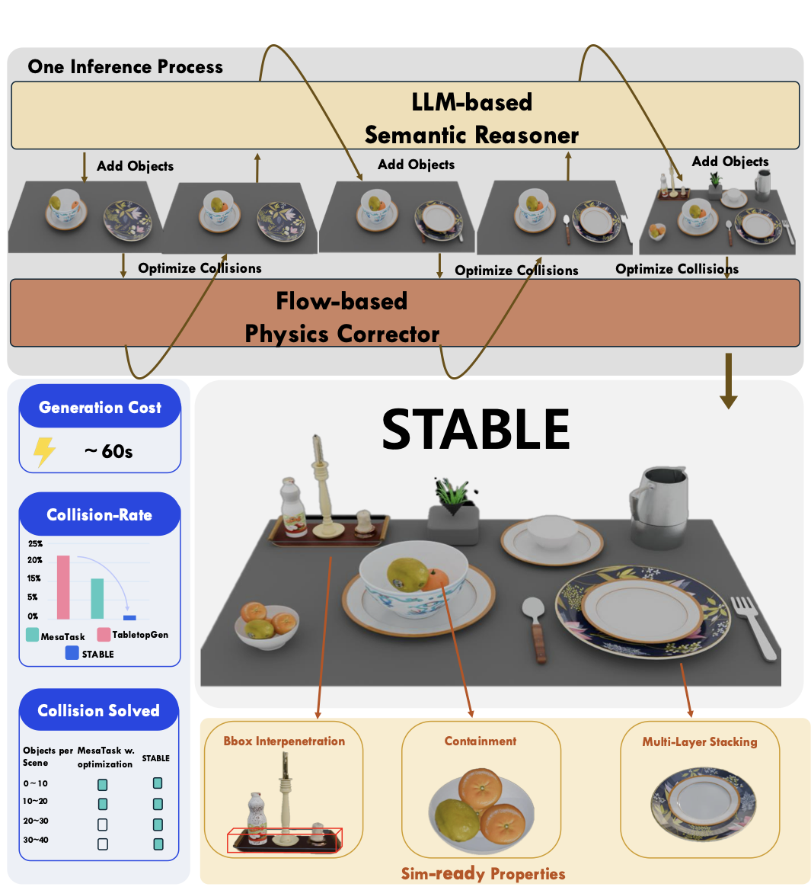
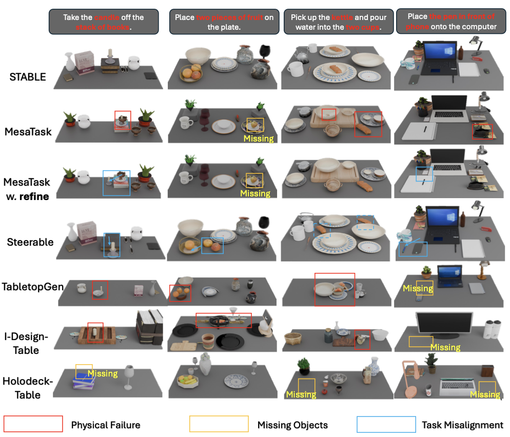
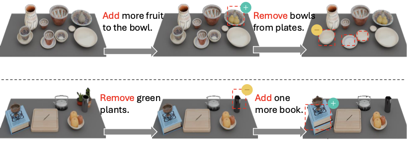
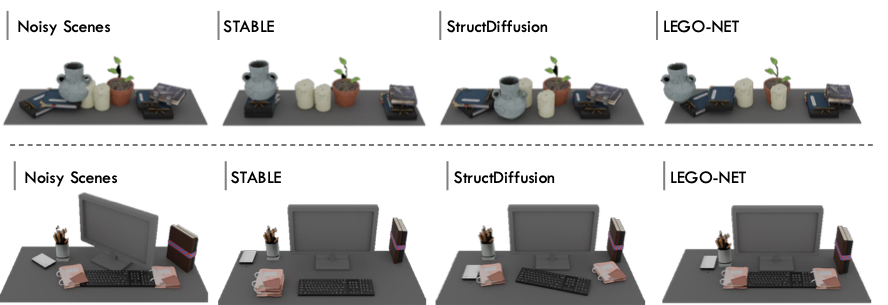
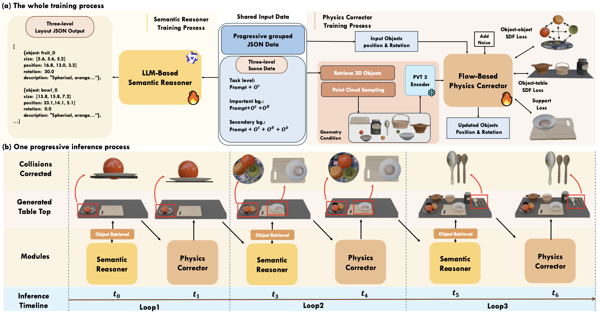

Scene 01
Video slot reserved
Place the first manipulation video at assets/videos/robot-scene-1.mp4.
TL;DR: STABLE couples an LLM-based Semantic Reasoner with a geometry-aware Physics Corrector to generate task-aligned, collision-free tabletop scenes that are ready for simulation and robot manipulation.

From task instructions to simulation-ready scenes
Generated scenes for manipulation rollouts.
Place the first manipulation video at assets/videos/robot-scene-1.mp4.
Place the second manipulation video at assets/videos/robot-scene-2.mp4.
Task-aligned layouts with fewer physical failures.
Qualitative comparisons highlight common baseline failures, including interpenetration, missing task objects, and broken spatial relations. STABLE preserves task semantics while producing simulation-ready tabletop geometry.

Editing and rearrangement.


A progressive semantics-physics loop.
STABLE alternates semantic scene construction with physics-aware pose correction, expanding from task-critical objects to contextual background objects while keeping each intermediate layout feasible.

BibTeX
@inproceedings{luo2026stable,
title = {STABLE: Simulation-Ready Tabletop Layout Generation via a Semantics-Physics Dual System},
author = {Luo, Zhen and Yang, Yixuan and Xu, Xudong and Hao, Jinkun and
Lyu, Zhaoyang and Zheng, Feng and Pang, Jiangmiao and Fu, Yanwei},
booktitle = {International Conference on Machine Learning},
year = {2026}
}